6.810 Engineering Interactive Technologies (fall 2020)
Tattoo Transfer Paper and Signal Processing
Your Task for Today
Today, we want to move our circuits off the paper and onto other objects.
In particular, we are going to use tattoo transfer paper to transfer an inkjet printed circuit onto a leather armband.
The leather armband will have a menu created via inkjet printed touch buttons (perhaps include slider and multi-touch here?), an inkjet-printed bend sensor that recognizes when the armband is put on and thus curved or removed from the arm and placed flat on the table, and an IMU attached to the circuit that can count steps.
After we made the hardware design, we will do some signal processing and show the sensed and processed signals in Processing.
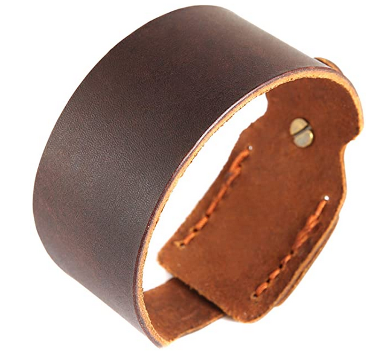


First Experience with Tattoo Transfer: Decorative Artwork
We recommend before you go down into the circuit design experience, you check out how the tattoo transfer paper works using a simple aesthetic design and a test object other than the leather armband.
Transferring an Existing Tattoo Design
In the first step, let's just learn how to transfer an existing tattoo so we get used to the process.
In your package, we already inkjet printed with regular CMY ink this decorative tattoo for you onto this tattoo transfer paper.
Since this is only a decorative tattoo (no silver ink), you apply it to your skin if you like to.
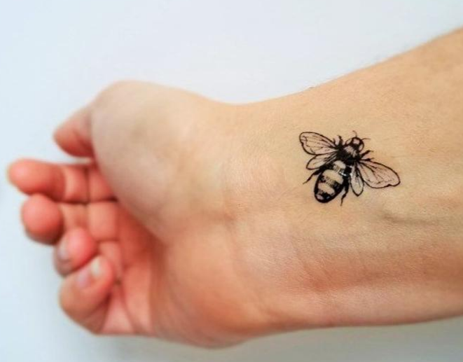
So now how do you get this tattoo on an object?
Cut out a square area around the design on the white sheet. Put the remaining white sheet back into the box for later use.
Next, cut our a similar sized area from the green sheet (the adhesive sheet), which we will use to form the adhesive layer. Put the remaining green sheet back into the box for later use.
Apply the green sheet (adhesive sheet) by peeling away the green backing and then place the sticky transparent film on to the top of the printed image.

Use a your fingers or a ruler to make sure the adhesive sheet is attached over the entire area, this is important so make sure you press on it properly across the entire area, otherwise parts of your tattoo will not have adhesive on them and will not stick to the object.
Next, cut out the design around its outline using a scissor.

Next, remove the clear plastic from the adhesive layer (yes all that's left will be the glue), which exposes the adhesive.

Get a wet sponge or wet cloth ready.
Then apply the tattoo adhesive side to your skin and cover with the wet cloth for 10-15 seconds, you will know you are getting there when the paper backing slides off easily.


Great, we hope it worked and you are ready to create your own design.
Creating your Own Tattoo Design
Ok, so in the next steps, we want to repeat the process but use a very simple decorative design you made.
Take the sharpie we added to your package and draw the 6.810 logo onto the tattoo transfer paper (the white sheet).
Important 1: You need to draw on the glossy side of the paper
Important 2: You need to mirror your image since it will be flipped when you apply the tattoo paper to your skin. If you don't mirror it you have the same problem as we below. I know this needs some head twisting when you draw it out, if it helps use a drawing program to see how it would look like mirrored.
Once you have drawn your own design, repeat the process as mentioned above and transfer the tattoo onto your skin or on an object of your choice (if you have nothing available, a shampoo bottle or other container will serve).
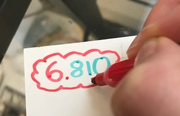
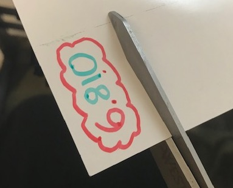
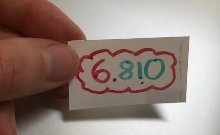
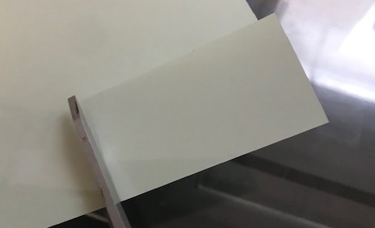
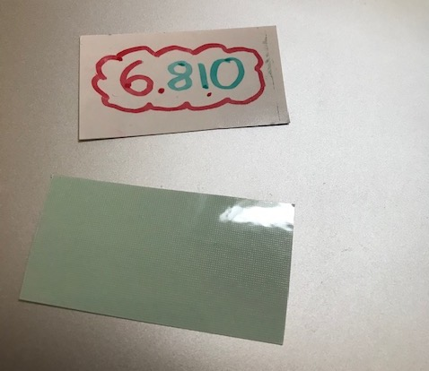
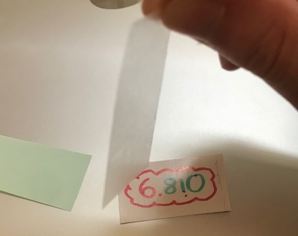
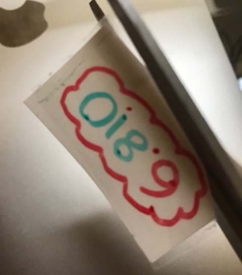
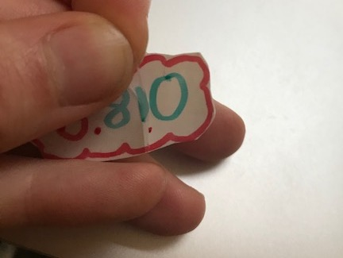
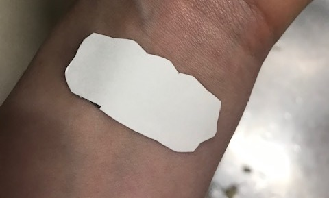
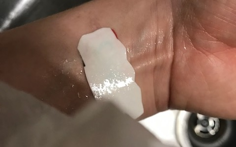
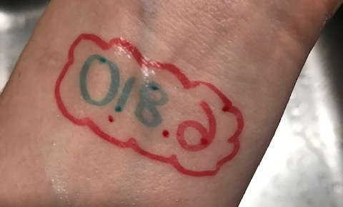
Note that this is wrong since the image was not mirrored during the design phase!
Checkoff 1: Show that you applied both tattoos (the one we gave you and your own) to an object of your choice.
Applying Circuit Design Tattoo to the Leather Arm Band
We are now going to use some tattoos that have silver inkjet printed traces.
Please do not apply these tattoos to your skin anymore since we don't know if you may have any skin reactions to the silver.
To save us some time today, we already inkjet printed the circuit design for you today.
If you want to see the design file that we used for printing, you can open the circuitdesign.ai (add link) and you can also see the design file below, both virtual and then the printed tattoo transfer paper sheet you have in your package.
You can see that our design contains touch buttons for the menu, a bend sensor (the wavy lines, more on this later), and also a placeholder to attach an IMU later.
Once you feel comfortable with the tattoo application process, please take the circuit design for the armband and apply it to it as shown in the image below.

(left) The art layer (in black) and the electrical traces (in red and blue). Paper Skintillates
You can also see the layering here explained:

The paper backing and tattoo substrate are the white sheet, then you put your art layer and the conductive layer, and finally you close it off with the green adhesive sheet.
Testing the Circuit
Once you applied the circuit you want to make sure all the wires are in-tact.
Use your multimeter to probe each wire.
If you find that a wire is broken, you can use the silver pen and add some silver in those locations where particles didn't correctly transfer to fix it.
 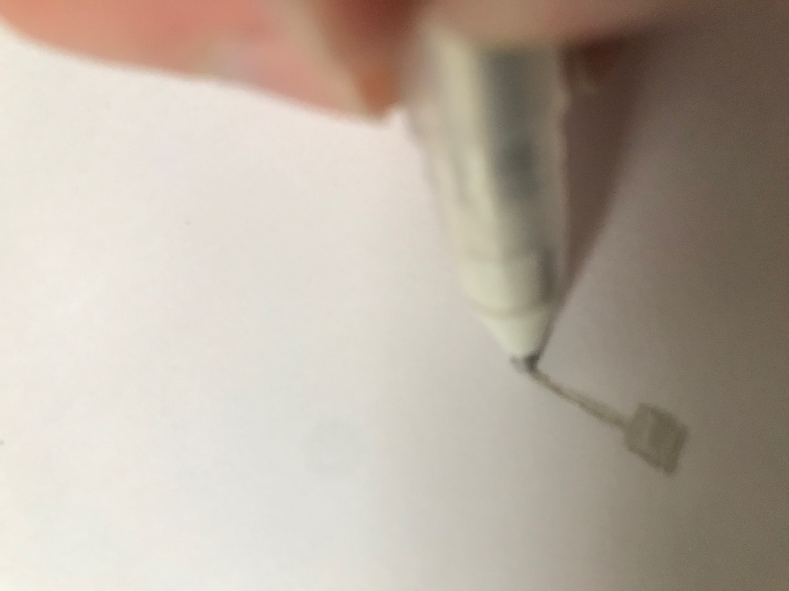
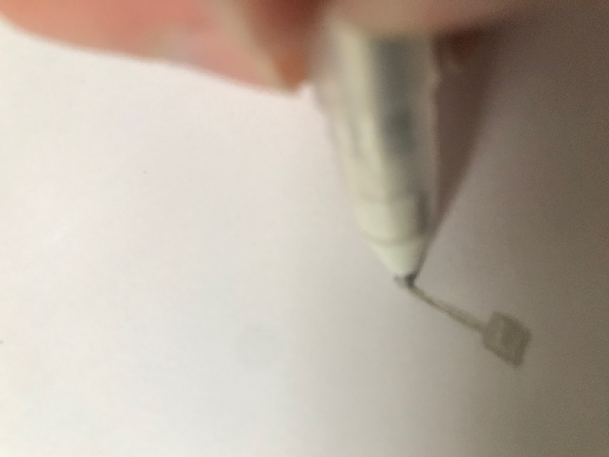
Adding IMU and LED
Once you confirmed that everything works, you are ready to add the electronic components onto the armband.
In our case, we are only going to add an IMU and a simple LED in this step.
Remember that you need to use z-tape to attach the components to the circuit: apply z-tape to the back of the individual components PCB boards and then attach it to the armband carefully.
Important: For the microcontroller, we are not yet going to attach it to the circuit and instead are going to use the Attiny as a dual-inline package for now to program it with the Tiny Programmer and later replace it with our SMD version..
 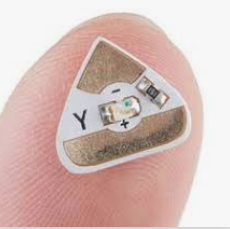
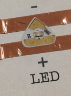
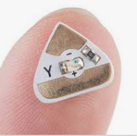
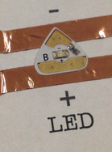
Connecting to Tiny Programmer
As last time, we are going to use some conductive copper tape to connect to the jumper wires and then connect the jumper wires to the Tiny Programmer with our ATtiny on board.

Blinking the LED
To do a first test if your armband works, lets write some code that blinks the Chibitronics LED.
Checkoff 2: Show that your Armband's LED blinks.
Signal Processing and Visualizing Sensor Output
Next, we will write both Arduino to read the sensor values and process them, and Processing code to visualize what the sensors are reading.
Printing a Float to Serial
Last time we send a value via Serial it was only a 0 or 1 for button pressed or not pressed. However, if we want to visualize the actual sensor data, we need to send floats representing the sensor values.
Serial, however, can only transmit binary information, i.e. 0 or 1.
Thus, if we want to send a value through serial, we need to first convert it into binary information.
We already provide you with the code below (tutorial here).
Arduino (float to binary):
Serial.begin(9600);
float analog_touch = sensor1.capacitiveSensor(samples_touch);
serialFloatPrint(analog_touch);
delay(100);
}
void serialFloatPrint(float f) {
byte * b = (byte *) &f;
Serial.print("f:");
Serial.write(b[0]);
Serial.write(b[1]);
Serial.write(b[2]);
Serial.write(b[3]);
}
Processing (binary to float):
void draw() {
if(myPort.available() > 0) {
char inByte = myPort.readChar();
if(inByte == 'f') {
// we expect data with this format f:XXXX
myPort.readChar(); // discard ':'
byte [] inData = new byte[4];
myPort.readBytes(inData);
int intbit = 0;
intbit = (inData[3] << 24) | ((inData[2] & 0xff) << 16) | ((inData[1] & 0xff) << 8) | (inData[0] & 0xff);
float f = Float.intBitsToFloat(intbit);
println(f);
}
}
If everything is working, you should see the float information run by in the Processing window.
Visualizing the Sensor Input At the Current Point in Time
Next, we want to visualize the sensor input.
For starters, we just want to show the value at the current moment in real-time.
Reuse some of the code you wrote in lab 1 for drawing a rectangle and an output text.
Connect the rectangle height to the incoming float value.
When the float value is above a certain value, the bar should change color and the text should show 'touched' instead of 'hovered', also if the hand is not even close we want to write 'no input'.
Also indicate on the bar where your threshold is by drawing a line at the height of your cut off value for touched, hovered, and no touch.
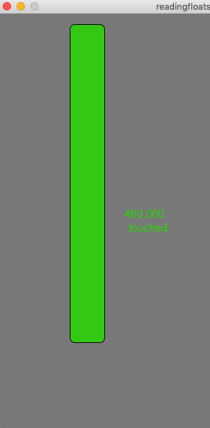
Visualizing the Sensor Input Over Time
Next, we also want to wrote our own visualization over time, so we can keep track of how often the user has touched.
Extend your code to also contain a line graph. We recommend you make use of the line() function in Processing for this.
Your graph should color different no input, hover, and touch.
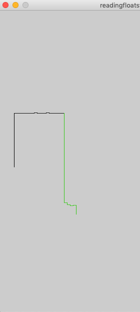
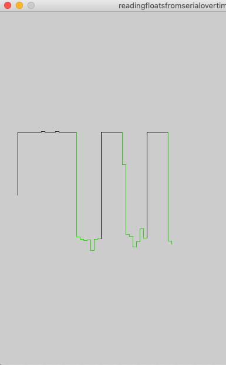
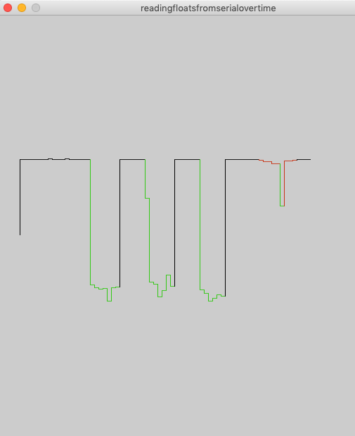
You probably already noticed that you have to apply a scaling factor to the touch input otherwise you values are probably plitted outside of the window and you can't see them. If you apply to much scaling however, your values are squeezed together too much and you can see the data anymore.
Also we have only applied a very basic tresholding to the touch input. Those values can change depending on if the user's finger is wet or not and what the environmental moisture is. In the next lab we will apply some advanced techniques, such as adaptive tresholding to clean up the input signal.
Bend Sensor
The last thing we want to look at today is the bend sensor that is part of your arm band.
The images below show inkjet printed bend sensors in a variety of different shapes.
The bend sensor is based on the paper Flexy (ACM TEI 2017)
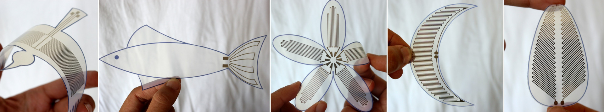
Drawing your Own Bend Sensor
Before we wire up the bend sensor that is part of your armband, let's draw our own bend sensor.
How should a layout for a bend sensor look like?
Basic Working Principle Bend Sensor
The bend sensors above are nothing more than silver inkjet printed partciles on paper.
Bending the paper in lets the tiny particles move closer to each other, bending the paper in the opposite direction lets the particles move apart from each other. One can measure this bending effect by monitoring resistance:
bending in: brings particles closer together and thus reduces resistance.
bending out: moves particles closer away from each other and thus increases resistance.
The higher the magnitude of flexing, the higher is the change in resistance.
This is the basic sensing principle behind resistive strain gauges.
What determines bending accuracy and bending direction?
- number of sensing lines: With more sensing lines, the resistance change to flexing is higher as compared to fewer sensing lines. Our sensor designs typically have 10 to 30 sensing lines.
- line length: the line length of our sensors varies between 2cm and 5cm.
- line width: customize depending on the sensing material; more conductive materials such as silver nanoparticle ink, wider sensing lines result in a lower sensor response and are generally not preferred as more material is consumed with no advantage in sensing response. Instead, for applications that require less response range, fewer thin sensor lines can be drawn instead of a larger number of wide lines.
- line spacing: linear and angular spacing between the sensor lines. Each of the sensor lines need not be parallel to each other and can be placed at different angular orientations. This enables sensing multi-axial deformations. In addition, the linear spacing between the sensor lines is kept much smaller than the sensor length. If the spacing is larger, then the change in resistance to flexing across sensor length is attenuated within the material laid out in perpendicular direction.
- composition: how multiple sensing units within a geometry are laid spatially, e.g. two sensing units in a bird shape design are slightly curved to fit the wing shape better
- connecting traces: traces connect the sensor design to the area on the substrate where contacts are tethered to a microcontroller; generally quite wide to have less resistance, and typically curved to avoid resistance change due to any uni-axial flexion.
Your Task: Draw your own bend sensor
Use the silver pen and draw your own bend sensor.
In particular, your bend sensor should measure (take one of Juergen's examples)
Sketch out the design.
Sensor Layout
Single Line: The most basic design of a flex sensor is a single line of conductor, whose resistance is measured from its two ends.
Two Parallel Lines: The line can also be laid out in a U shape, resulting in two parallel lines responding to flexing with a higher response than a single line.
Many Parallel Lines (what you see on the armband): Eventually, an even longer line can be laid out in a zig-zag pattern of parallel lines to maximize the sensing lines subjected to bending in the parallel direction.
The image below illustrates this standard design that is also part of your armband. The sensor design senses bending predominantly along the direction of the parallel sensor lines, referred as the longitudinal axis.
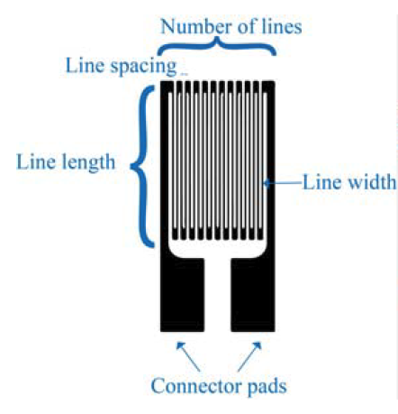
Electronics
The change in resistance can be measured either directly with a resistance meter or with a standard voltage divider curcuit.
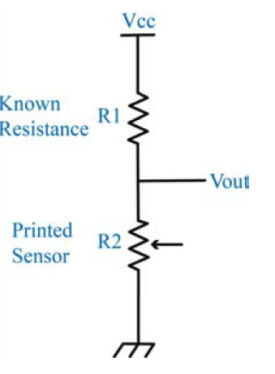 
The question now is what resistance values to chose for R1 and R2.
Actually, we only choose R1 since R2 is the resistance we want to measure in the end to determine how much the sensor was bend.
Choosing R1
For R1, we want to choose a resistor that roughly matches the overall resistance of the bend sensor.
Michael: how do we know this? do we use the multimeter to measure at the two end points of the bend sensor?
In practice this means, that if in the flat state, the arm band has a resistance of 500Ω, we should use for R1 around 470Ω.
Calculating R2
To calculate R2, i.e. the change in resistance caused by flexing the sensor, we can use some math:
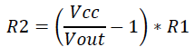
R2: the resistance of the printed sensor (varies as you bend it, so we want to measure this!)
R1: the known resistance (470Ω in our example)
VCC: supply voltage (5V from the Arduino)
Vout: measured voltage output (measured from pin A0, see schematic)
Implemented in piece of code this looks like this (perhaps have students implement this themselves):
Code
/*
ReadAnalogVoltage
Reads an analog input on pin 0, converts it to voltage, and prints the result to the serial monitor.
Graphical representation is available using serial plotter (Tools > Serial Plotter menu)
Attach the center pin of a potentiometer to pin A0, and the outside pins to +5V and ground.
*/
float R1 = 680; //known resistance
void setup() {
Serial.begin(9600);
}
void loop() {
int sensorValue = analogRead(A0);
// Convert the analog reading (which goes from 0 - 1023) to a voltage (0 - 5V):
float voltage = sensorValue * (5.0 / 1023.0);
Serial.println(voltage);
float R2 = (voltage / (5 - voltage)) * R1;
Serial.println(R2);
delay(1000);
}
Your Task
Wire up the bend sensor by building the circuit and write the code for reading the bend values.
Checkoff 3: Show that your bend sensor works and plots the correct values on the serial monitor.
The resistance of the pattern depends on the sensor dimensions by
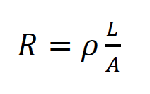
L: sensor length
A: cross-sectional area (number of lines * (line width * line thickness))
𝜌𝜌: resistivity of the sensing material
We present spatial arrangements of the sensor design in 1D & 2D for sensing surface deformations, in varied sensor geometries. For sensing more complex deformations of a 1D surface, a linear array of sensing units is presented. A radial array enables sensing of 2D deformations on a surface.
(left) An omni-directional flex sensor design (right) with intermediate tapping.
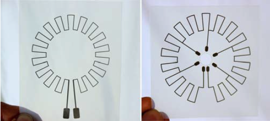
Example Bend Sensor Designs
Bird wing: This design illustrates a composition of multiple sensing units. A flex sensor spanning each of the wings can capture flexion during wing flapping. Sensing lines in each unit span the wings partly and are slightly curved to better fit to the wing shape. (design dimensions: length = 45mm, width = 0.35mm, curved at 8°).
Fish design: This design illustrates how a sensor can mimic the visual appearance of the interactive object. We illustrate a sensor placed around the caudal fin (tail) of the fish. The sensor can sense the back and forth wavy movement of the tail. It has fewer sensing lines with varying spacing between them. (design dimensions: length of fin =30mm, width of fin = 44mm, line width = 0.5mm).
Flower: This design illustrates a circular arrangement of individual sensing units. The example design consists of five petals connected through a central unit. Each of the sensing units consists of varying line lengths to conform to the petal shape and is connected to the central connector. (design dimensions: length1 = 29.78mm, length2 = 35.36mm, length3 = 36.46mm, width =0.33mm).
Crescent design: This design illustrates embedding a flex sensing within an extremely curved surface. Length of the sensing lines is continuously varied to adapt to the crescent shape. (design dimensions: length of crescent: 77 mm, width of crescent: 22mm, line width: 0.35mm).
Leaf design: This design illustrates alignment of the sensing lines at an angle to better fit the target shape. A single sensor runs through the entire leaf shape. Intermediate tapping points can be added for granular sensing response. (design dimensions: leaf length: 80mm, width: 35mm, sensing lines aligned at 45°).
float analog_touch = sensor1.capacitiveSensor(samples_touch);
serialFloatPrint(analog_touch);
delay(100);
}
void serialFloatPrint(float f) {
byte * b = (byte *) &f;
Serial.print("f:");
Serial.write(b[0]);
Serial.write(b[1]);
Serial.write(b[2]);
Serial.write(b[3]);
}
if(myPort.available() > 0) {
char inByte = myPort.readChar();
if(inByte == 'f') {
// we expect data with this format f:XXXX
myPort.readChar(); // discard ':'
byte [] inData = new byte[4];
myPort.readBytes(inData);
int intbit = 0;
intbit = (inData[3] << 24) | ((inData[2] & 0xff) << 16) | ((inData[1] & 0xff) << 8) | (inData[0] & 0xff);
float f = Float.intBitsToFloat(intbit);
println(f);
}
}
ReadAnalogVoltage
Reads an analog input on pin 0, converts it to voltage, and prints the result to the serial monitor.
Graphical representation is available using serial plotter (Tools > Serial Plotter menu)
Attach the center pin of a potentiometer to pin A0, and the outside pins to +5V and ground.
*/
float R1 = 680; //known resistance
void setup() {
Serial.begin(9600);
}
void loop() {
int sensorValue = analogRead(A0);
// Convert the analog reading (which goes from 0 - 1023) to a voltage (0 - 5V):
float voltage = sensorValue * (5.0 / 1023.0);
Serial.println(voltage);
float R2 = (voltage / (5 - voltage)) * R1;
Serial.println(R2);
delay(1000);
}
 Measuring the Curvature of objects with a single flex sensor. |
 A virtual inchworm animated with a single flex sensor. |
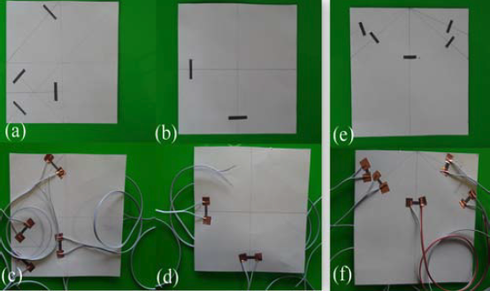 Origami-Folding Tool that measures if you fold correctly. |
Checkoff 3: Show your Processing visualization to a member of the teaching team.